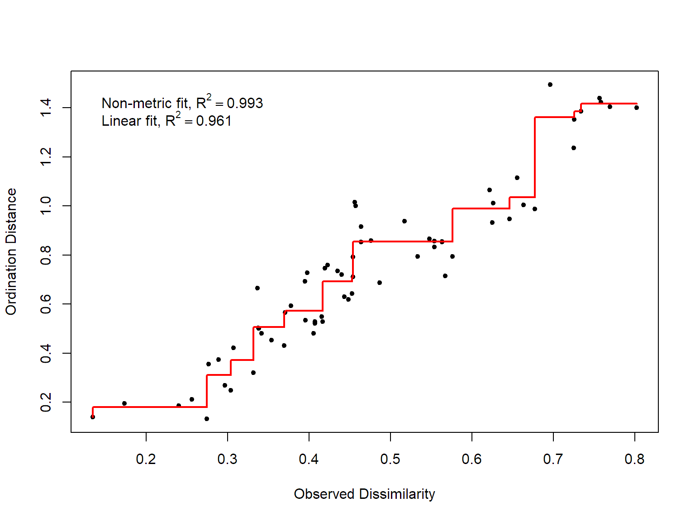
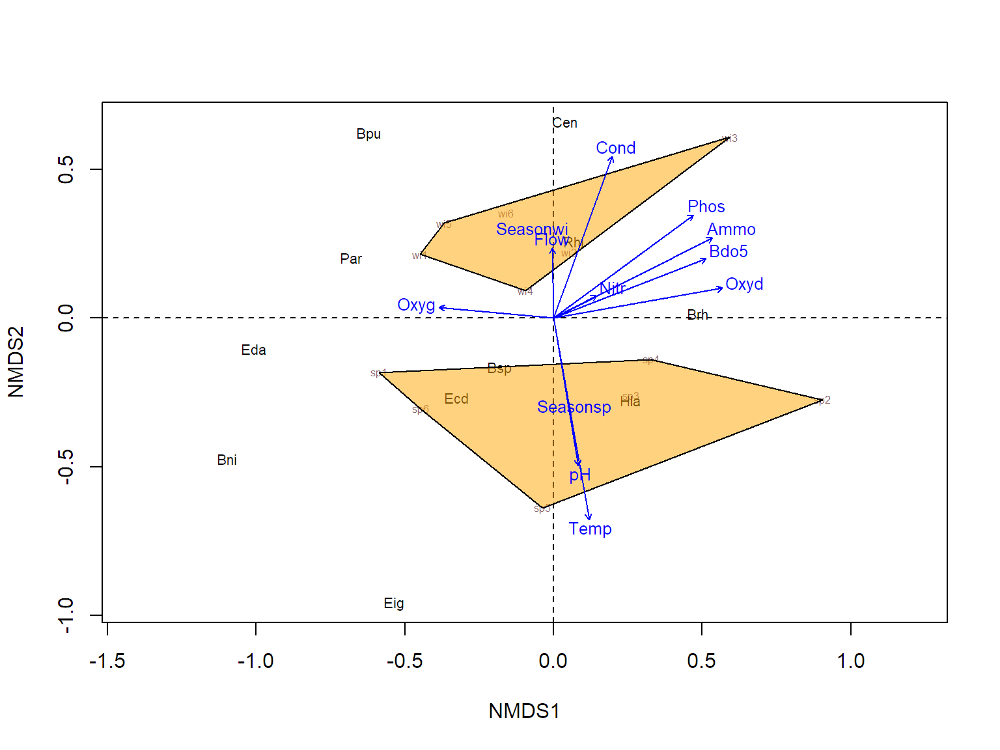
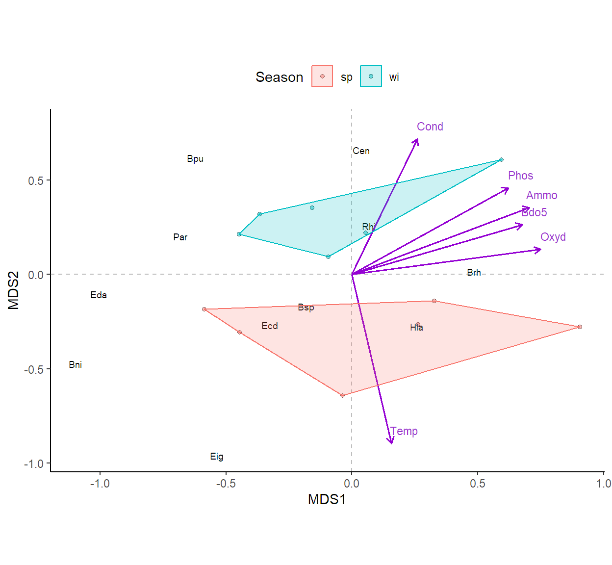

Code
library(readxl)
library(vegan)
library(ggplot2)
library(ggrepel)Es una técnica multivariada de ordenación de interdependencia con enfoque basado en rangos para todo tipo de datos especialmente aquellos que no son normales o que están en una escala discontinua o arbitraria. Su estructuración se debe a Shepard (1962) y Kruskal (1964). Está técnica en la Ecología se utiliza típicamente para analizar una matriz de sitios x especies aunque también se puede emplear para analizar una matriz de sitios x múltiples variables físico-química.
Para poder aplicar el análisis es importante que:
Matriz de datos básica de la Guía:
Matriz de datos básica para la clase:
Family_Plant. Contiene la información de la abundancia de 21 familias de plantas en 97 sitios de una planicie costera pantanosa (Mekhada) ubicada al este del puerto de Annaba, y que limita al norte con el mar Mediterráneo y un cordón de dunas, al sur con los macizos de arcilla y arenisca de Numidia, al oeste con un wadi y al este con un perímetro irrigado. Los datos fueron recogidos por de Be´lair en 1979 para su tesis doctoral sobre biogeografía y desarrollo de la llanura de Mafragh (Annaba - Argelia).
Diatom: Contiene la información de la presencia/ausencia de diferentes especies de diatomeas de la familia Gomphonemataceae de plantas en 193 muestras de piedras recolectadas durante los meses de junio a septiembre de 1998 en diferentes ríos y arroyos franceses por parte del Cemagref y el Centre de Recherche Gabriel Lippman, los cuales posteriormente se analizaron los biofilm.
Scripts:
library(readxl)
library(vegan)
library(ggplot2)
library(ggrepel)Para ejemplificar usaremos la base de datos “Ephemeroptera_In_R”, que contiene la información sobre la abundancia de 11 especies del orden Ephemeroptera y 10 variables ambientales en 6 sitios de muestreo en dos estaciones sp (primavera), wi (invierno).
Tabla 1.
Descripción de las variables
| Variables | Unidad de medición |
|---|---|
| Eda | N° de individuos de Ephemera danica |
| Bsp | N° de individuos de Baetis sp |
| Brh | N° de individuos de Baetis rhodani |
| Bni | N° de individuos de Baetis niger |
| Bpu | N° de individuos de Baetis pumilus |
| Cen | N° de individuos de Centroptilum sp |
| Ecd | N° de individuos de Ecdyonurus sp |
| Rhi | N° de individuos de Rhithrogenasp |
| Hla | N° de individuos de Habrophlebia lauta |
| Par | N° de individuos de Paraletophlebia |
| Eig | N° de individuos de Ephemerella ignita |
| Temp | Temperatura en °C |
| Flow | Caudal (L/s) |
| pH | pH |
| Cond | Conductividad |
| Oxyd | Oxígeno disuelto (mg/L) |
| BDO5 | Demanda biológica de oxígeno(mg/L) |
| Oxyg | Oxidabilidad |
| Ammo | Niveles de Amonio (mg/L) |
| Nitr | Niveles de Nitratos (mg/L) |
| Phosph | Niveles de Fosfatos (mg/L) |
Cargaremos los datos en el ambiente de RStudio y luego cambiemos la naturaleza del objeto usando la función "as.data.frame() nombre". Seguidamente le daremos etiquetas a las UE usando la función "row.names()" las cuales se ubican en la columna 1 de la matriz de datos básica bajo el nombre de ID.
A<- read_excel(file.choose())
A<-as.data.frame(A)
row.names(A)<-A$IDPara dar cumplimiento al requisito 1 abordaremos el análisis con la información de la abundancia de las 11 especies del orden Ephemeroptera, y así dar respuesta a:
¿Qué sitios de muestreo muestran una misma composición de especies del orden Ephemeroptera?
Para el requisito 2 definamos primero que es una matriz de distancias.
Matriz de Distancia. Matriz simétrica cuyas componentes equivalen a la distancia que entre dos objetos tomados por pares. Su importancia en los análisis multivariado en el contexto de las ciencias biológicas radica en la posibilidad que brinda para analizar comunidades en un plano gráfico. Para su construcción existen un sin número de medidas de distancias que permiten cuantificar qué tan diferentes ó similares son las comunidades entres sí, como las medidas de distancias simétricas Euclideana y Hellinger.
¿Qué medida usaremos para nuestra matriz de distancias?. En ecología una de las distancias más utilizada es la de Bray-Curtis, se trata de una medida de distancia de disimilitud que se usa para datos de abundancia de especies. Está medida resulta ser más intuitiva debido a que las especies comunes y raras tienen pesos relativamente similares. La disimilitud de Bray-Curtis está limitada entre 0 y 1, donde 0 significa que los dos sitios tienen la misma composición (es decir, comparten todas las especies) y 1 significa que los dos sitios no comparten ninguna especie.
Iniciaremos definiendo dos dimensiones de ordenación
La función "metaMDS()" ubicarda en el paquete "vegan" permite ejecutar este paso, donde el argumento "distance" se emplea para indicar la medida de distancia a emplear, el argumento "k" corresponde al número de dimensiones y el argumento "trymax" al número de interacciones máximas para encontrar la solución.
nmds<-metaMDS(A[,4:14],distance = "bray",k =2,trymax = 300) Wisconsin double standardization
Run 0 stress 0.08253133
Run 1 stress 0.08253133
... Procrustes: rmse 9.129723e-07 max resid 1.472924e-06
... Similar to previous best
Run 2 stress 0.08253133
... Procrustes: rmse 1.999668e-06 max resid 4.529943e-06
... Similar to previous best
Run 3 stress 0.08253133
... New best solution
... Procrustes: rmse 5.624243e-07 max resid 9.117322e-07
... Similar to previous best
Run 4 stress 0.08253133
... Procrustes: rmse 1.402122e-06 max resid 2.796187e-06
... Similar to previous best
Run 5 stress 0.1644224
Run 6 stress 0.1869293
Run 7 stress 0.2364283
Run 8 stress 0.08253133
... Procrustes: rmse 1.695909e-06 max resid 3.301441e-06
... Similar to previous best
Run 9 stress 0.08253133
... Procrustes: rmse 4.332592e-06 max resid 8.819683e-06
... Similar to previous best
Run 10 stress 0.08253133
... Procrustes: rmse 2.298626e-06 max resid 4.66688e-06
... Similar to previous best
Run 11 stress 0.08253133
... Procrustes: rmse 4.651979e-06 max resid 9.226564e-06
... Similar to previous best
Run 12 stress 0.1869299
Run 13 stress 0.08253133
... Procrustes: rmse 3.277951e-06 max resid 6.391012e-06
... Similar to previous best
Run 14 stress 0.08253133
... Procrustes: rmse 8.950625e-07 max resid 1.806142e-06
... Similar to previous best
Run 15 stress 0.08253133
... Procrustes: rmse 2.074948e-06 max resid 4.178674e-06
... Similar to previous best
Run 16 stress 0.08253133
... Procrustes: rmse 2.401469e-06 max resid 4.871915e-06
... Similar to previous best
Run 17 stress 0.08253133
... Procrustes: rmse 8.309318e-07 max resid 1.500966e-06
... Similar to previous best
Run 18 stress 0.08253133
... New best solution
... Procrustes: rmse 1.419331e-06 max resid 2.87297e-06
... Similar to previous best
Run 19 stress 0.2046707
Run 20 stress 0.08253133
... Procrustes: rmse 2.457314e-06 max resid 4.989349e-06
... Similar to previous best
*** Best solution repeated 2 timesPara evaluar la bondad de ajuste de los datos al modelo se tiene en cuenta el estrés y el diagrama de Shepard o gráfico de ajuste lineal.
El estrés es una medida que permite determinar que tan bien las distancias en el espacio de ordenación generado por el análisis reflejan las distancias de la matriz original. Como regla práctica se considera que:
Valores de estrés menores a 0.05 brindan una excelente representación en el espacio de ordenación.
Valores entre 0.05 y 0.10 brindan una muy buena representación.
Valores entre 0.10 y 0.20 brindan una representación buena.
Valores mayores a 0.20 brindan una representación pobre.
El diagrama de Shepard nos ofrece la posibilidad de detectar cualquier anomalía en el análisis. La configuración estará bien ajustada, es decir hay un buen ajuste cuando el diagrama refleje una función creciente.
nmds$stress[1] 0.08253133stressplot(nmds,pch = 20,p.col = 1)
Las salidas evidencian un buen ajuste de los datos al modelo, brindando una muy buena representación de las distancias de los sitio dada la abundancia de las especies, \(stress=0.08\), con solo dos dimensiones. Adicionalmente el diagrama de shepard muestra una función creciente con un mejor ajuste para un escalamiento multidimensional no métrico,\(r=0.99\), frente a uno métrico, \(r=0.96\).
Un gráfico nMDS es uno de los muchos tipos de gráficos de ordenación que se pueden utilizar para mostrar datos multidimensionales en 2 dimensiones. El gráfico básicamente resalta las similitudes entre las UE.
Interpretación. Cuanto más cerca estén dos puntos en la gráfica, más similares serán en términos de los datos subyacentes.
Nota. Recordemos que el nMDS es solo una técnica exploratoria gráfica y no una evaluación estadística de la separación o correlación de muestras; a pesar de ello, hay formas de superponer información adicional en sus gráficos que permitan visualizar las tendencias subyacentes que los están afectando; en nuestro caso podríamos examinar como las variables ambientales pueden impulsar cambios en la composición de las especies en los sitios muestreados. Para ello usaremos la función "envfit()" indicando primero el objeto donde se guardo el análisis y luego la matriz de variables a considerar (Tanto cualitativas como cuantitativas). Cuando llamamos los resultados de la función, obtenemos una salida que se divide en vectores y factores, para las variables continuas y categóricas respectivamente. Si los datos no incluyen ambos tipos de variables, solo verás en la salida vectores o factores según sea el caso. Tanto para los vectores como para los factores, se muestra una tabla que pone los nombres de las variables en fila, donde las dos primeras columnas son sus respectivas coordenadas en la ordenación nMDS para las dimensiones 1 y 2, en la tercera columna se muestra el valor del r-cuadrado y en la última su significancia. Valores de \(r^2\) cercanos a cero son predictores débiles que en el gráfico se mostrarán con vectores cortos. La forma de interpretar los vectores es observando la dirección del vector en especial de los predictores fuertes, de manera que el valor de la infromación usada para encontrar la similitud en la UE aumenta en dirección a la proyección del vector.
ordiplot(nmds,type="n")
orditorp(nmds,display="sites",cex=0.5,air=0.01,col = "pink4")
orditorp(nmds,display="species",cex=0.7,air=0.01)
abline(h = 0,lty=2)
abline(v = 0,lty=2)
data.envfit <- envfit(nmds, A[,c(2,15:24)])
data.envfit
***VECTORS
NMDS1 NMDS2 r2 Pr(>r)
Temp 0.17377 -0.98479 0.8633 0.001 ***
Flow -0.01437 0.99990 0.1006 0.609
pH 0.16596 -0.98613 0.4617 0.053 .
Cond 0.34165 0.93983 0.6104 0.010 **
Oxyg -0.99558 0.09388 0.2720 0.224
Bdo5 0.93199 0.36249 0.5508 0.023 *
Oxyd 0.98476 0.17391 0.6058 0.013 *
Ammo 0.89323 0.44960 0.6517 0.011 *
Nitr 0.88931 0.45730 0.0481 0.813
Phos 0.80455 0.59389 0.6234 0.010 **
---
Signif. codes: 0 '***' 0.001 '**' 0.01 '*' 0.05 '.' 0.1 ' ' 1
Permutation: free
Number of permutations: 999
***FACTORS:
Centroids:
NMDS1 NMDS2
Seasonsp 0.0700 -0.3016
Seasonwi -0.0700 0.3016
Goodness of fit:
r2 Pr(>r)
Season 0.3137 0.016 *
---
Signif. codes: 0 '***' 0.001 '**' 0.01 '*' 0.05 '.' 0.1 ' ' 1
Permutation: free
Number of permutations: 999ordihull(nmds, groups = A$Season,draw = "polygon", lty = 1, col = "orange")
plot(data.envfit,col = "blue",cex=0.8)
#EXTRAER LOS DATOS.
DATOS_Sp<-as.data.frame(nmds$species) #Columnas
DATOS_Sitio<-data.frame(nmds$points,Season=A$Season) # UE
DATOS_Env<-as.data.frame(scores(data.envfit, "vectors")) * ordiArrowMul(data.envfit) #Predictores cuant
DATOS_Env_CAT<-as.data.frame(scores(data.envfit, "factors")) * ordiArrowMul(data.envfit) #Predictores cuali
DATOS_Env_CAT$Season<-c("sp","wi")
grp.a <- DATOS_Sitio[DATOS_Sitio$Season == "sp", ][chull(DATOS_Sitio[DATOS_Sitio$Season == "sp", c("MDS1", "MDS2")]), ] # hull values for sp
grp.b <- DATOS_Sitio[DATOS_Sitio$Season == "wi", ][chull(DATOS_Sitio[DATOS_Sitio$Season == "wi", c("MDS1", "MDS2")]), ] # hull values for wi
hull.data <- rbind(grp.a, grp.b)
ggplot(DATOS_Sitio, aes(x=MDS1, y=MDS2,color=Season)) +
geom_vline(xintercept = 0,linetype=2,color="gray")+
geom_hline(yintercept = 0,linetype=2,color="gray")+
geom_point(aes(fill=Season),size=1.2,alpha=0.5, pch=21,color="black")+
geom_text(data=DATOS_Sp,
aes(x=MDS1,y=MDS2,label=rownames(DATOS_Sp)),
size=2.5,colour="black")+
geom_segment(data=DATOS_Env[c(1,4,6,7,8,10),],
aes(x = 0, y = 0, xend=NMDS1, yend=NMDS2),
col="darkviolet",
arrow = arrow(length = unit(0.2,"cm")),size=0.6)+
geom_text(data=DATOS_Env[c(1,4,6,7,8,10),],
aes(x=NMDS1+0.05,y=NMDS2+0.07,
label=rownames(DATOS_Env[c(1,4,6,7,8,10),])),
size=3,color="darkorchid")+
theme_classic()+theme(legend.position = "top")+
geom_polygon(data = hull.data,
aes(x=MDS1, y=MDS2, fill=Season,group=Season),alpha=0.20)+
coord_equal(ratio = 6/8)
Replique a manera de práctica el análisis de escalamiento multidimensional no métrico usando la matriz de datos básica Miroalgas.
A partir del análisis responda a:
Demey, Jhonny. D. R. (2011). Medidas de distancia y similitud. Researchgate. (Link: https://unimagdalena.alma.exlibrisgroup.com/leganto/public/57UMA_INST/citation/3605321920007076?auth=LDAP)
Rodríguez Barrios, J. (2022). Análisis de escalamiento multidimensional (MDS y NMD. En J. Rodríguez Barrios, Análisis de datos ecológicos y ambientales: aplicaciones con programa R (1.a ed., pp. 144-151). Ediciones Díaz de Santos.(Link: https://unimagdalena.alma.exlibrisgroup.com/leganto/public/57UMA_INST/citation/3605315570007076?auth=LDAP)
Legendre, P., & Legendre, Louis. (2003). Ecological resemblance. En Elsevier Science B. V. (Ed.), Numerical ecology (Second english, pp. 247-302). Elsevier Science B. V. (Link: https://unimagdalena.alma.exlibrisgroup.com/leganto/public/57UMA_INST/citation/3605320450007076?auth=LDAP)
Palacio, F., Apodaca, M., & Crisci, Jorge. (2020). Reducción de dimensiones: Métodos de ordenación. En F. Palacio, M. Apodaca, & Jorge. Crisci, ANÁLISIS MULTIVARIADO PARA DATOS BIOLÓGICOS Teoría y su aplicación utilizando el lenguaje R. (pp. 101-140). VAZQUEZ MAZZINI EDITORES. (Link: https://unimagdalena.alma.exlibrisgroup.com/leganto/public/57UMA_INST/citation/3605316260007076?auth=LDAP)